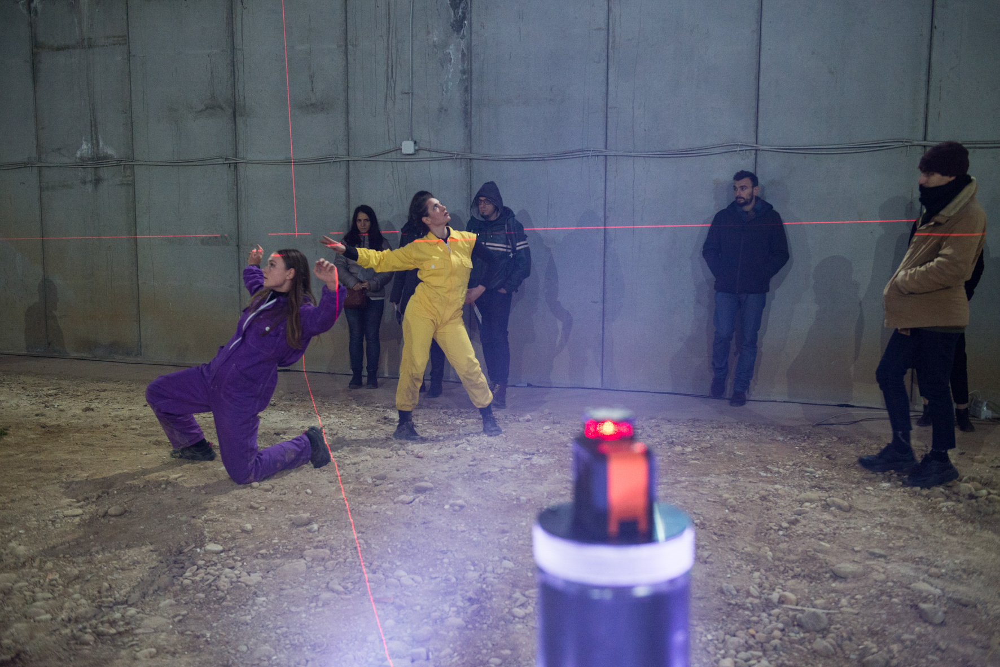
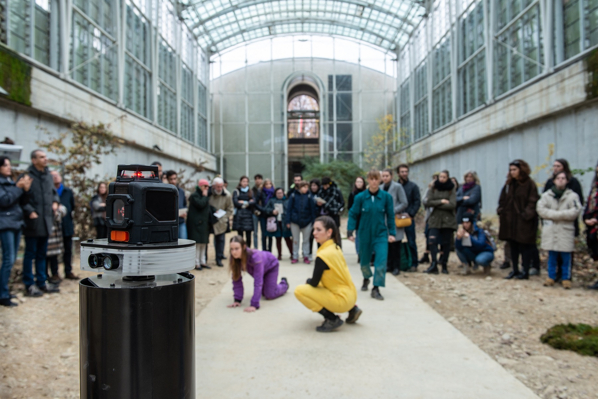
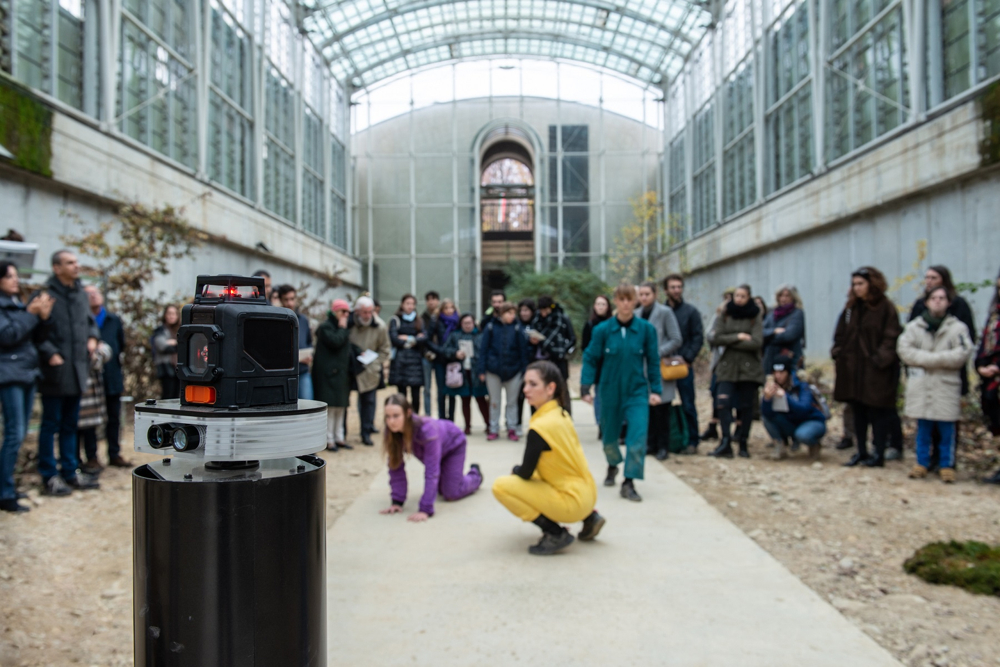

“Music exists in time; architecture, instead, does exist in space. Dance lives altogether in space and time.” Curt Sachs_
Zona Martiska consists of an immersive performance in which all participants share the intimacy of a collective urban exploration. Freely inspired by "Stalker" of A.Tarkovskij, the performance guides the audience through unexplored and abandoned architectural pieces. Thanks to a robot and sensors on the dancers' body, the result is a unique and site-specific performance.
Interaction meets contemporary dance
Zona Martiska is a performance, produced under the patronage of Compagnia di San Paolo, that .
We quickly identified two components. On the one hand, we wanted a sort of an , measuring distances and turning them into a soundscape that interacts with the moving audience.
On the other hand, performers were to be equipped with that translate their movement into sound modulations.
The result is a unique and performance that is the sum of an evocative venue, the sinuous body movements of the performers and the interaction of the audience with the robot. The video below shows an extract from the performance, !
Spread over a three days palimpsest, we launced six shows of about fifty minutes. At each time, only 50 visitors were allowed, cause we wanted it to be an .
 

Proudly we can say that we took back to life a piece of architecture. We were looking for and were keen on using to bring in audience to places which are not accessible. Luckily, the region of Piedmont opened for us the door of the -abandoned since 1998 - right in the outskirt of Turin.

Needless to say, we were happy as kids in front of such a - it was the right venue for our performance.
reharsing and researching
Few months before the show, we launched three residence programs in which we investigated both of the soon-to-be performance. Performers were equipped with a - a very precise and easy to hack IMU sensor, which could talk to Max Msp via a software called Osculator.
So how did it work? Each one of the performer could a specific musical instrument, according to the - were the key parameters.
At the same time, Martino - - could detect presence of walls, obstacles and people while rotating on its body. The distance detected would be transformed into a

To conclude we received plenty of . However, as expected, several people found the interaction too difficult to be understood - surely something to work on for the !
That's how we created a , an interactive performance in Turin, Italy.
Behind the scenes
Zona Martiska -an informal collective Simona Deaconescu anything which had to do with technology: from the robot to the body sensors on the dancers event production in general Klak Stories for Artists